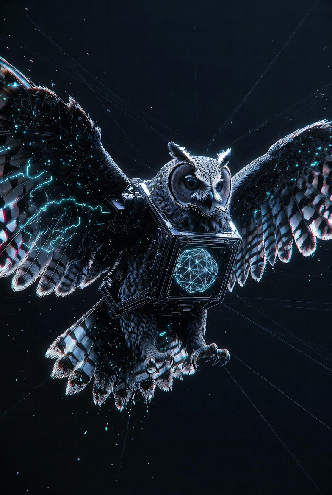
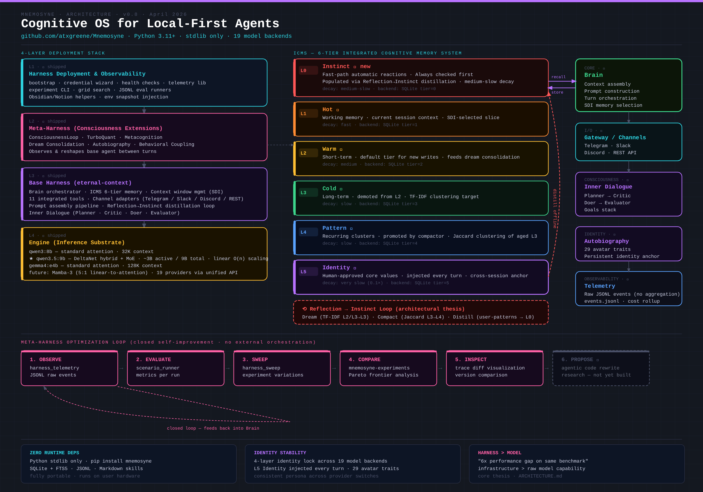
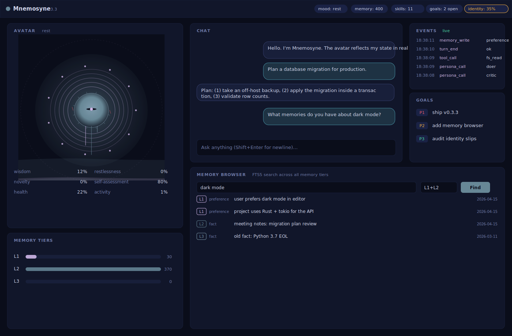

A drop-in memory provider for Hermes Agent with a six-tier cognitive memory model, a four-layer identity lock, and offline dream consolidation. Zero runtime dependencies. One pip install away.
The problem isn't that agents don't remember. The problem is that memory only flows in one direction.
Every other system retrieves upward from stored text. Mnemosyne adds the return path — higher-level reflection distilled back down into fast, user-specific instinct. The agent's first response is shaped by what it has learned about you, not just base-model priors.
Every number ships with the command that produced it and a regression gate that fails any change which drops a metric. To our knowledge, no other Hermes memory provider publishes eval-gated baselines.
Reproduce any of these yourself: python3 tests/test_all.py · bash test-harness.sh · mnemosyne-continuity run. Throughput measured single-thread on a Linux sandbox; your hardware will vary. Full methodology in docs/BENCHMARKS.md.
Plug the full six-tier ICMS into any Hermes Agent (Nous Research) as its persistent backend. One SQLite file. No API keys, no vector DB, no cloud. Demonstrated, not aspirational — validated end-to-end on a live runtime.
Turns persist automatically through a single-writer SQLite queue — the agent loop is never blocked. Session-end hooks run salient extraction, writing facts, preferences, and goals up-tier.
| memory_search(query, limit) | FTS5 BM25 + strength-weighted retrieval across all tiers |
| memory_write(content, kind, tier) | store fact / preference / goal / pattern at tier 2–5 |
| memory_stats() | direct SQLite per-tier row counts |
Memories carry tier semantics — working context vs. long-term vs. consolidated patterns vs. human-approved identity — with promotion, decay, and a distilled fast-path reflex cache. Hover a tier.


sqlite3 memory.db "SELECT content FROM memories" works with the framework gone.Mnemosyne is engineering, not mysticism — every mechanism traces to a paper. The honest split of shipped vs. experimental vs. research lives in ROADMAP.md.
The architecture writeup: ICMS tiers, the Reflection → Instinct loop, the Meta-Harness, and the eval contract behind every number on this page.
Read the docsMaharana et al. The 10-conversation, ~1,986-question benchmark Mnemosyne's retrieval runner targets, with recorded baselines.
arXiv:2402.17753Anderson et al. The activation-decay model behind Mnemosyne's per-kind memory decay and Hebbian strength reinforcement.
act-r.psy.cmu.eduGoodfire's manifold work guides the eval-gated roadmap for L4 pattern memory — preserving relational structure, not just flat abstracts.
goodfire.ai/researchThe agent framework Mnemosyne validates against as a drop-in MemoryProvider — discovery, tool routing, and the plugin manifest.
hermes-agent.nousresearch.comRetrieval probe set, the full LOCOMO runner with LM Studio + Mem0 adapters, and the check_regression.py gate — in the lab repo.